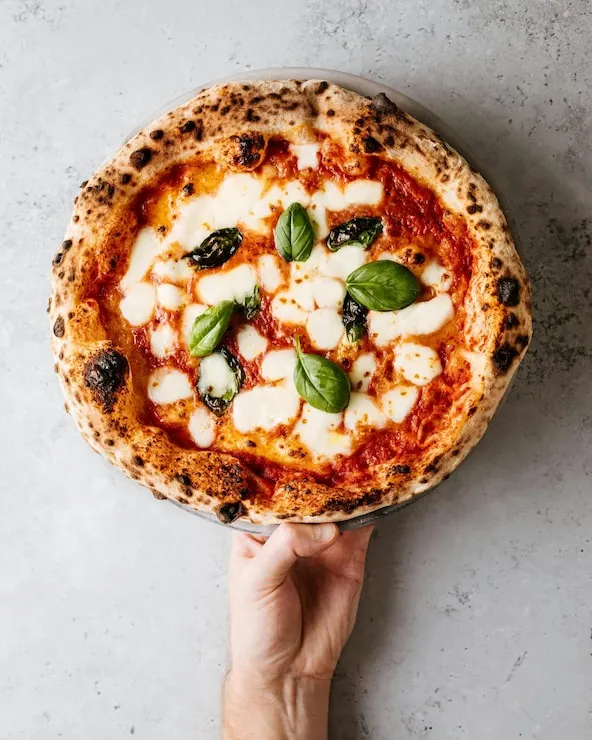

Pizza
home

Pizza is a classic Italian dish made with a crispy dough base, tomato sauce, and melted cheese. This recipe will guide you through the steps to make a delicious homemade pizza that you can share with your family and friends.
- Pizza dough
- Tomato sauce
- Mozzarella cheese
- Olive oil
- Basil
- Preheat the oven to 475°F (245°C).
- Lightly flour your work surface and roll out the pizza dough.
- Place the dough on a baking tray lined with parchment paper suitable for the oven temperature.
- Spread the tomato sauce evenly over the dough, leaving a small border around the edges.
- Tear the mozzarella into small pieces and spread them over the sauce.
- Drizzle the pizza with olive oil.
- Bake for 12-15 minutes until the crust is golden and the cheese is melted and bubbling.
- Remove the pizza from the oven and add fresh basil leaves.
- Let the pizza rest for a few minutes before slicing and serving.